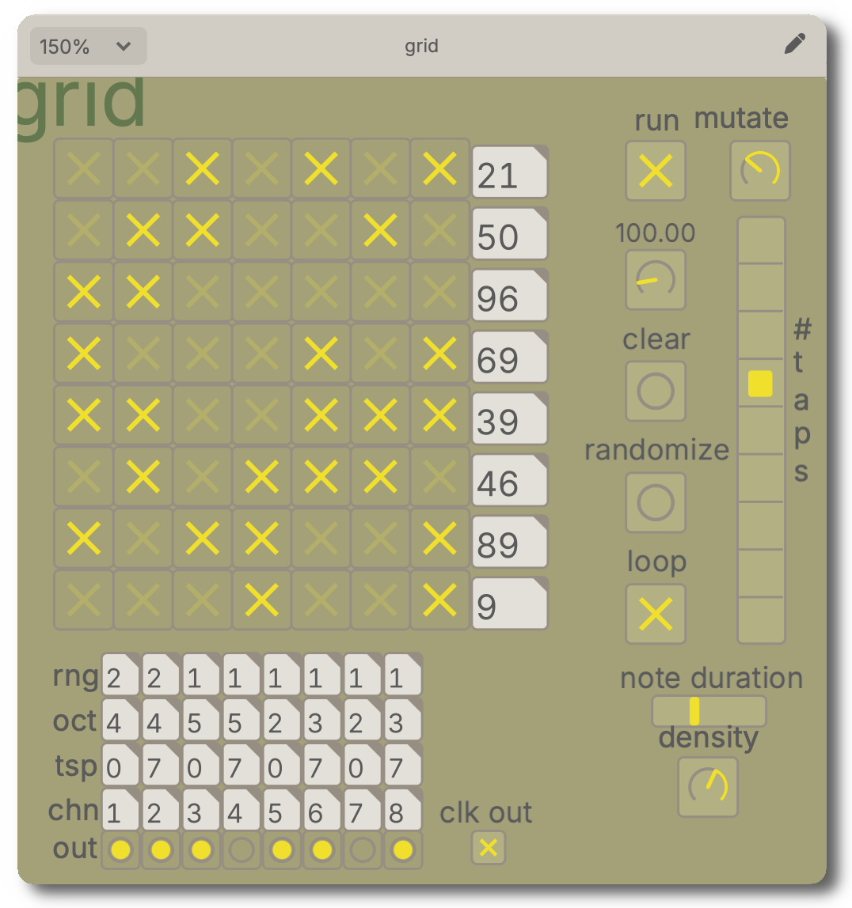

grid is an 8-channel sequencer that uses an 8x7 grid to produce 8 7-bit output streams which can be assigned to any MIDI channel.
each stream's octave range, base octave, and transposition can be individually adjusted along with the durations and the density (i.e. probability) of the outgoing MIDI notes.
the sequence can be probabilistically mutated at a variable number of taps within the grid to yield sequences that shift over time.